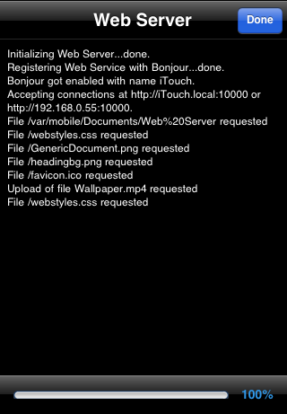
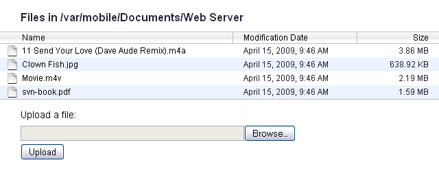
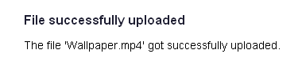

-
Serverele Web și WebDAV
iFile conține un server Web care poate servi fişiere la un browser web de la distanţă sau la un client WebDAV (doar pentru copiile iFile înregistrate). Cam toate sistemele de operare moderne conțin un client WebDAV, iFile poate fi folosit ca un disk drive de la distanță, ex. de MacOSX, Windows sau Linux.
Start serverul Web
După ce apeși pe butonul
 serverul web integrat va fi pornit.
serverul web integrat va fi pornit. Utilizat prin intermediul navigatorului Web
Dacă folosești Safari pe un PC sau Mac, vei găsi serverul web cu ușurință cu ajutorul lui Bonjour. Altfel, vei fi nevoit să introduci adresa în navigator. Serverul web va afișa conșinutul directorului root. Utilizatorul poate naviga jos în ierarhie.
 Poți încărca în sau descărca fișiere din acel director.
 Utilizat prin intermediul Clientului WebDAV
Mac OS X
- Pornește Finder și dezactivează previzualizarea fișierelor.
- Du-te ➔ Conectează-te la Server...
- În dialogul "Conectează-te la Server" introduce adresa serverului asa cum e afișată de iFile. În cazul în care ai ales autentificare cu nume de utilizator/parolă, introdu numele de utilizator și parola cum au fost definite în Preferințele iFile. Altfel, conecteazăte ca și oaspete.
- Apasă butonul "Conectează"
Notă: Pentru a preveni crearea fișierelor .DS_Store în iPhone, ai vrea să citești Article HT1629.
Poți să foloșești Cyber Duck sau un alt client WebDAV pe Mac. Are avantajele că auto-descoperă serverul iFile WebDAV prin Bonjour.
Linux (Ubuntu 9.10)
Aceasta a fost testată cu succes pe Ubuntu 9.10. Dar au fost niște probleme pe Ubuntu 9.04
- Places ➔ Connect to Server...
- Setează câmpurile în dialogul "Connect to Server":
- Tipul Serviciului: WebDAV (HTTP)
- Server: Adresa IP așa cum este afișat de iFile fără port, e.g. 192.168.0.2
- Port: Port așa cum este afișat de iFile, ex. 8080
- Director: /var/mobile
- Nume de utilizator: lasă gol și nu folosi autentificare pentru că nu merge
- Apasă butonul "Conectează"
Notă: Ubuntu 9.10 încă are probleme când mută fișiere dintr-un director în altul pe iPhone. Resultatul e ca se blochează. Este o eroare și în momentul în care copiezi fișiere din iPhone la Ubuntu pe 9.04. Închide serverul (și va începe să transmită). Cu toate că, mutarea nu va fii permanentă.
Windows XP
- În "My Network Places" alege "Add a network place"
- În "Add Network Place Wizard" apasă Next de două ori
- Introduce adresa serverului WEB asa cum e afișat de iFile, ex. http://192.168.0.10:10000 sau http://192.168.0.10:10000/var/mobile
- Apasă Next și alege destinația pentru rețea
- Apasă Next și Finish